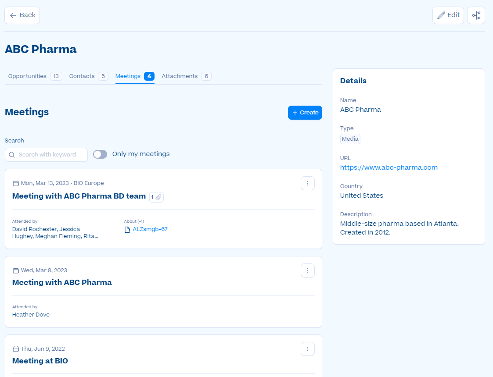

Problem Addressed
The partnering platform users lack a centralized and efficient method to capture, store, and access important details and outcomes from meetings, leading to fragmented workflows and no single source of truth. This creates friction and hampers their ability to track and monitor interactions, make informed decisions, and progress partnering opportunities effectively. Without an integrated meeting feature within the platform, users have to rely on external channels and documents, resulting in a loss of productivity and mismanagement of information.
Feature Overview
The Meetings Management feature allows users to:
- Capture and store key events, decisions, and action items from meetings within the partnering platform
- Manage access to meeting information by making the meeting private
- Record all interactions during conferences worldwide, serving as a medium to track Business Development performance and progress
Key Aspects
- Core platform feature
- Critical functionality for Go-to-Market